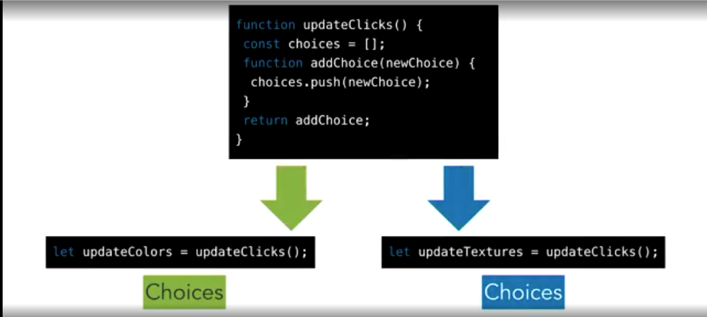
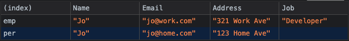
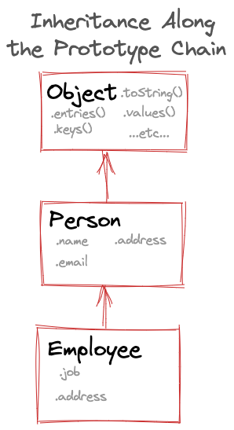

ECMAScript Version 2015+
AKA Edition 6 or ES6
ES6+ We've already Seen
New ES6+ Features
- String Template Literals & Tagged Templates
- Default Parameters
- Destructuring & Param Context matching
- Rest & Spread operators
- Object Propery/Method Shorthand
- Computed Properties
- Map, WeakMap, Set, WeakSet
- Module Imports/Exports
- Classes, Generators
- Promise & fetch
- Internationalization Utils
- non-ES6 Extra: Currying/Closures
New Feature Resources
Concise Index of them at
es6-features.org
ES6 help
ES6 README
🧵 String Template Literals
MDN
Multiline Strings: uses backticks
` ` (single or multi line)
let myStr = `This is
a fancy
multiline string`
String Interpolation: allows embeddable javascript
expressions with the ${ } syntax
let myVar = 'fancy'
let myFn = () => typeof myVar
let myStr = `This is
a ${myVar}
multiline ${myFn()}`
🏷️ Tagged Template Functions
MDN
You can create a special function from a template string literal which
takes the template string as its parameters:
function myTag(string, person, job) {
console.log(string, person, job)
}
let person = 'Jamie'
let job = 'developer'
myTag`That person's name is ${ person } and they are a ${ job }.`
It will provide as parameters the chunked string in an array, and the
other parameters separately.
Default Parameters
If no value or undefined is passed, then initialize with a default
value
function chatMsg(greeter, msg) {
console.log(`${greeter}: ${msg}`)
}
function chatMsg2(greeter = 'Auto-greeter', msg = 'Hello') {
console.log(`${greeter}: ${msg}`)
}
chatMsg("Joe", "What's up?") // "Joe: What's up?""
chatMsg() // 'undefined: undefined'
chatMsg2() // 'Auto-greeter: Hello'
Hypothetical Use Case:
Use previous params or even functions in your default param expression
const randNum = () => Math.random().toString().slice(3, 5)
function createUser(
name,
password,
username = name+randNum(),
isAdmin = false
) {
sendLoginData(user, password)
setPermissions(isAdmin)
}
createUser('Joe', 'h2jq9fn48',)
createUser('Jay', 'y9i7h3ndk', undefined, true)
Destructuring
let { 🍞, 🥬, 🍅, 🧅, 🥓, 🧀, 🥩, 🍞 } = 🍔
If you think about it, a bacon cheeseburger is a data structure
because it's just a list of its own ingredients.
Arrays & Objects are essentially just lists, too. Destructuring lets
us unpack arrays or objects into their distinct consituent elements
and save them into variables on the parent scope.
- Array Destructuring
- Object Destructuring
- Parameter Context matching
It's kinda magical
// destructure the magic & the horse from a unicorn
let { ✨, 🐴 } = 🦄
Object Destructuring
const { 🍞, 🥬, 🍅, 🧅, 🥓, 🧀, 🥩, 🍞 } = 🍔
const burger = {
topBun: 'sourdough',
condiment: 'ketchup',
lettuce: 'iceberg',
tomato: 'beefsteak',
bacon: 2,
cheese: 'cheddar',
burger: 'angus',
bottomBun: 'sourdough'
}
// destructure properties as needed into global namespace
// & provide alternate identifiers to avoid naming collisions
const { tomato, bacon, cheese, burger: patty } = burger
Array Destructuring
var list = [ 1, 2, 3 ]
var [ a, , b ] = list
// We can avoid needing a temp var when swapping
[ b, a ] = [ a, b ]
// can also use default assignment here
let [d, e, f, g=7] = list
Common Use Case
Destructuring Config Objects to extract just the properties you need.
const user = {
user: 'jdoe',
email: 'jdoe@home.com'
fullName: {
first: 'John',
last: 'Doe'
}
};
let { email, fullName: { first } } = user
let myStr = `${first}'s email is ${email}`;
console.log(myStr); // "John's email is jdoe@home.com"
Default Value Assignment for Destructuring
Available to use for either Objects or Arrays
var list = [ 7, 42 ]
var [ a = 1, b = 2, c = 3, d ] = list
console.log(a, b, c, d) // 7, 42, 3, undefined
const burger = { /* ...previous values... */}
const { tomato, bacon, onion, pickles = 'dill' } = burger
console.log(tomato, bacon, onion, pickles)
// ↳ 'beefsteak', 2, undefined, 'dill'
Parameter Context Matching
You can think of this as destructuring for parameters
Handy when you need just a couple of values in an object/array
parameter.
function f ([ name, val ]) {
console.log(name, val)
}
let arr = ['John', '#42']
f(arr) // logs: 'John', '#42'
function g ({ name: n, val: v }) {
console.log(n, v)
}
let obj = {name: 'John', val: '#42'}
g(arr) // logs: 'John', '#42'
Using Destructuring With Default params
✨ Combine these for super powers! ✨
function f([x = 1, y = 2]) {
return x + y
}
f([]) // 3
f() // Type Error, won't work without the array
function g({a, b = 2}) {
let ap = a ?? 0 // Nullish Coalescer can guard undefined
return ap + b
}
g({a: 4}) // 6
g() // Type Error, won't work without the object
Rest & Spread Operators
...
Rest: to gather up the rest of the values into
an Array or Object. Used in function parameters.
Spread: to spread out encapsulated values into
loose values. Used on arrays and objects.
encapsulated here means that the values are contained in an
object or an array.
Rest
Used in for function parameters to create a
Variadic function (a function that accepts a varying number of
parameters)
Function Arity: The number of parameters a function accepts
(see Function.length)
function addFirstTwo(a, b, ...manyMoreArgs) {
return a + b
}
addFirstTwo([1,1,5,6,7]) // 2
Object Spread
const names1 = {cat: 'Bob'}
const names2 = {dog: 'Fred', alligator: 'Benedict'}
const copy = { ...names2 } // Avoid pass by Reference trouble
const newNames = { ...names1, ...names2 };
Array Spread
var arr = [1, 2, 3]
var arr2 = [...arr] // copy of arr
var arr3 = arr.slice() // also a copy of arr
It can be used to create a copy of an array, similar to
.slice()
Object Property & Method Shorthand
Method Shorthand uses Function Declaration but it:
- omits the colon & the
function keyword
- preserves the local value of
this
let shout = (pet) => console.log(pet.toUpperCase() + '!!!')
let cat = 'meow';
let dog = 'woof';
let myPets = {
shout, // arrow functions written like properties
cat,
dog,
speak (pet) { // function declaration shorthand
console.log(this[pet])
}
}
myPets.speak(myPets.cat) // 'Meow'
// It's a bit shorter...
// than the old syntax:
let myPets = {
shout: shout
cat: cat,
dog: dog,
speak: function (pet) {
console.log(this[pet])
}
}
Computed Properties
let makeKey = key => key;
let key = 'key'
// Before was done one by one like this:
let obj = {};
obj[key] = 'value';
// Now can be done in bulk:
let computedObj = {
[key]: 'value',
[makeKey('string')]: 'value',
[makeKey('name')]: 'value'
}
Use Maps over objects when:
- its properties will be changing frequently
- you need the
size property
- you need the properties to preserve their order.
- Keys can be any value, not just Strings or Symbols.
- There are no prototype keys, which can simplify looping
const myMap = new Map()
myMap.set('key', 'value')
myMap.set(true, 'value')
let func = key => null
myMap.set(func, 100)
myMap.has(func) // true
let obj = {a: 'A'}
myMap.set(obj, 'B')
myMap.get(obj) // 'B'
myMap.size // 3
myMap.delete('key') // true
myMap.clear() // deletes all
// initializing a Map with an array of entries (tuples):
const initMap = new Map([
['dog', 'woof'],
['cat', 'meow'],
]);
// Looping over a Map
// ✅ Using forEach OR for ... of
map1.forEach((value, key) => {
console.log(value, key); // woof dog, meow cat
});
for (const [key, value] of map1) {
console.log(key, value); // dog woof, cat meow
}
// ✅ Iterate over a Map's keys OR values
for (const key of map1.keys()) {
console.log(key); // dog, cat
}
for (const value of map1.values()) {
console.log(value); // woof, meow
}
Sets may only contain one of any particular value.
This makes them convenient as a way to remove duplicates in an array.
const numbers = [2,3,4,4,2,3,3,4,4,5,5,6,6,5,3,4,5]
const noDupes = [...new Set(numbers)] // [2,3,4,5,6]
const mySet = new Set()
mySet1.add(5)
mySet1.add('some text')
mySet1.add({a: 1, b: 2})
mySet1.has(5)
mySet1.size // 3
mySet1.delete(5)
More on Keyed Collections
Map, WeakMap, Set & WeakSet are all Keyed Collections
Refer to this
article
for more on when to use each one
- Map has a less common twin: WeakMap
- The less common
WeakMap has same API, except keys can only be objects or functions:
- Set has a less common twin: WeakSet
const myWeakMap = new WeakMap()
const myWeakSet = new WeakSet()
WeakMap may not be that useful. It's called "Weak"
because it allows garbage collection.
Code Organization Techniques
Modules, Closures & Classes
Code Encapsulation
We'll learn about three ways to encapsulate our code
- Modules
- Closures
- Classes
- based on classes (new in es6+)
All of these let us wrap our code inside of a "black box" so we can expose only the parts of it that we deliberately intend to and we can keep the nitty gritty implementation details hidden & inaccessible inside.
Modules 📦
Little packages for our code
- Modules provide a new way to organize our code into manageable chunks.
- By using the
import & export keywords, we can modularize code &
organize it into a unit defined by a file.
- Modules wrap up parts of your code into easily resusable pieces
- Modules makes those pieces of code easily composed together
A simple single file Module
import myArr from './data.js'
const power = 3
function module(arr) {
let biggerArr = myArr.concat(arr)
return biggerArr.map(item => item ** power)
}
export default module
Export & Import
- Export is used when creating JavaScript modules to export functions,
objects, or primitive values from the module so they can be used by
other programs with the import statement.
- Import is used to import bindings (i.e. functions, vars, etc) which
are exported by another module.
- This will come in handy with React & other frameworks
- But we can also take advantage of this for own code organization
Export Syntax
export let name1, name2, …,;
export const name1 = …, name2 = …, …;
export function functionName(){...}
export class ClassName {...}
// Defaults
export default expression;
export default function (…) { … }
Import Syntax
import defaultExport from "module-name.js";
import * as name from "module-name.js";
import { export1 } from "module-name.js";
import { export1 as alias1 } from "module-name.js";
import { export1 , export2 } from "module-name.js";
Closures
W3,
MDN
Before Modules, code encapsulation was accomplished with the
Revealing Module Pattern
using IIFEs
Closure Building Blocks
- Scope (Global vs. Local)
- Nested Functions
- Currying: Returning an Inner Function
// Local vs Global
function fn() {
let base = 9
var power = 2 // even var is local to a function scope
}
console.log(power, base) // Reference Error
// Nesting & Returning Functions
function gn() {
let temp = 9
var power = 2
return function() {
temp * power
}
}
Closures Illustration
Global variables are long-lived: until page is
discarded (navigate away, close)
Local variables are short-lived: Function invocation
creates them,
Function Return destroys them (garbage collected)
for (var i = 1; i <= 4; i++) {
setTimeout(function() {
console.log(i)
}, 1000*i) // 5 5 5 5
}
for (var i = 1; i <= 4; i++) {
setTimeout(function(x) {
return () => console.log(x)
}(i), 1000*i)
// 1 2 3 4
}
Block Scope Fix with let, const,
.forEach
for (let i = 1; i <= 4; i++) {
setTimeout(function() {
console.log(i)
}, 1000*i) // 1 2 3 4
}
[...Array(4).keys()].forEach(i => {
setTimeout(function() {
console.log(i)
}, 1000*i) // 0 1 2 3
})
Simple Curried Function
let fn = x => y => x + y
// let fn = (x) => (y => x + y)
let n = fn(3)
// Some indefinite amount of time may pass, then:
n(4) // 7
// Could also be invoked at once:
fn(3)(4) // 7
Due to referential transparency, these are identical evaluations,
despite difference in time.
The same curried function written 4 ways
const add = x => y => x + y
const add = x => {
return y => {
return x + y
}
}
function add(x) {
return function(y) {
return x + y
}
}
// calling add:
const partial = add(1) // return a function with 1 in its closure
const continuation = partial(2) // returns 3, because it added 1 from above with 2
Parallel Closures
Curried Functions allow us to reuse code by creating
Parallel Closures.
Closures can create multiple instances of closed over variables that
are independent of each other.

Closures & Modules Code Along
Code Encapsulation
Intro to JS Classes
Object Oriented Patterns
ES6 classes are a syntactic sugar over the prototype-based OO pattern.
It's not true Classical Inheritance that other languages have (like Java)
Having a single convenient declarative form makes class patterns
easier to use, and encourages interoperability.
Classes support prototype-based inheritance, super calls,
instance/static methods, constructors and finally private identifiers.
Javascript Class Keyword
class Point2D {
constructor(x, y) {
this.x = x;
this.y = y;
}
// ...define more variables and methods here
}
const instanceXYPoint = new Point2D(1, 2)
instanceXYPoint.x // 1
instanceXYPoint.y // 2
- Constructor/Super
constructorsuper- Instantiating with the
new keyword
- Getters/Setters
- Private members with the hash symbol
- Prototypal Inheritance
Made Possible by Enhance Object Literals
var obj = {
// set a custom __proto__
__proto__: theProtoObj, // the constructor
// Methods
toMyString() {
// Super calls
return "My " + super.toString();
}
}
obj.toMyString() // 'My [object Object]'
obj.toString() // '[object Object]'
Along with property shorthand & computed properties, these also bring
object literals and class declarations closer together, and allow
object-based design to benefit from some of the same conveniences
Not your Java's Inheritance
Classical vs Prototypal Inheritance
They lack the classical inheritance model like other OOP language
classes
They use Prototypal Inheritance just like Objects.
Typical Class Declaration
class Vegetable {
constructor(name){
this.name = name
}
}
const carrot = new Vegetable('carrot');
console.log(carrot.name); // 'carrot'
Equivalent Function
function vegetable(name) {
return {
name
}
}
const carrot = vegetable('carrot')
console.log(carrot.name) // 'carrot'
Get and Set
class TempConverter {
constructor(F) {
this.F = F;
}
get boilsWater() {
return this.F >= 212;
}
get C () {
return (5 / 9) * (this.F - 32)
}
set C (degrees) {
this.F = (degrees * 9.0) / 5 + 32;
}
} // can't use arrow function syntax for getters/setters because of lexical scoping
Class Example
class Person {
constructor(name, email, address) {
this.name = name
this.email = email
this.address = address
}
getInfo() {
return {
Name: this.name,
Email: this.email,
Address: this.address
}
}
}
Extending Classes
class Employee extends Person {
constructor(job, address, ...args) {
// super is a link w/ Parent Class
super(...args) // calls parent w/ rest of args
this.job = job
this.address = address // Can overwrite parent properties
// such as with the work address here
}
getInfo() { // Can overwrite methods too
return {
Name: this.name,
Email: this.email,
Address: this.address,
Job: this.job
}
}
}
What is super
-
super maintains the connection between parent and child
classes - It establishes the inheritance chain.
super method is used to call parent's constructor & populates the class with all of it's parents properties & methods-
It is optional to use it - only if you need to use
properties/methods of your parent class in your derived class
-
You can create a class without a constructor, but it will use a
default one
// default will inherit from Object
constructor() {}
// For the derived class, if you don't specify a constructor, it will use
constructor(...args) {
super(...args);
}
Results
const joPerson = new Person(
"Jo", "jo@home.com", "123 Home Ave"
)
const joEmployee = new Employee(
"Developer", "321 Work Ave", "Jo", "jo@work.com"
)
console.table({
emp: joEmployee.getInfo(),
per: joPerson.getInfo()
})

Instances
For determining or asserting the chain of inheritance
Binary Operator: instanceof()
const joEmployee = new Employee(
"Developer", "321 Work Ave", "Jo", "jo@work.com"
)
joEmployee instanceof Person // true
// OR check the __proto__ property (references the parent)
joEmployee.__proto__ // Person {constructor: ƒ, getInfo: ƒ}
Private methods/properties MDN
Private members on a class are fully protected and inaccessible, except within the class block scope
class ClassWithPrivate {
#privateField = 42;
#privateMethod() {
console.log("can't access me directly")
return this.#privateField
}
logPrivateMethod() {
console.log(this.#privateMethod())
}
}
const instance = new ClassWithPrivate()
// Public members can be access, called or deleted
instance.logPrivateMethod() // works
// Private members can't be accessed nor deleted
instance.#privateField === 42 // Syntax Error
instance.#privateMethod() // Syntax Error
delete instance.#privateMethod() // Syntax Error
The static Keyword
For running some procedural code once for a class & sharing it between instances
class ClassWithPrivateStatic {
static field = 'some value'
static method () {
return 42;
}
static {
// …setup code to run once
}
}
Code in a constructor runs once per instance, while code in a static block runs once per class declaration.
Prototypal Inheritance

Steps to access inherited properties in JS:
-
Check if the key exists locally. If it does, return local value.
-
If there is no local key, check up the prototype chain
(via the __proto__ property).
-
Iterate up the prototype chain looking for the next object w/
the specified key
-
For the first object encountered in the prototype chain w/ the
key, return that key's value.
-
If the key is not found in entire prototype chain, return
undefined.
Compostion vs Inheritance
-
The functional programming paradigm prefers composition over
inheritance
-
Composition means simply Composing Functions
- Composition is a more modular & flexible approach
- With inheritance you often inherit more than needed
-
In general, with deeply nested inheritance chains, you're gonna
have a bad time & end up overwriting a lot
If you ask for a banana...